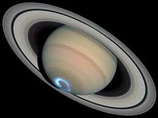

Sistema Solar
Los Planetas
Saturno
Saturno es el sexto planeta del sistema solar contando desde el Sol,
el segundo en tamaño y masa después de Júpiter y el único con un sistema
de anillos visible desde la Tierra.
Su nombre proviene del dios romano Saturno.El aspecto más característico de
Saturno son sus brillantes y grandes anillos. Antes de la invención del telescopio,
Saturno era el más lejano de los planetas conocidos y, a simple vista, no parecía
luminoso ni interesante.

Tabla alumnos
| Nombre |
Apellidos |
Nota |
| Carlos |
Rodriguez |
6 |
| Aldo |
Sanchez |
8 |
Tipos de chocolates
| tipos |
amargo |
con leche |
blanco |
| marcas |
aguila |
nestle |
milka |